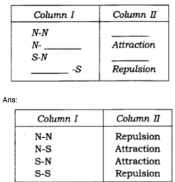
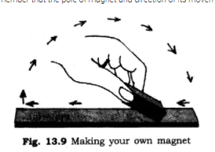
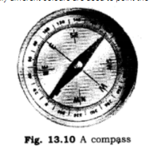
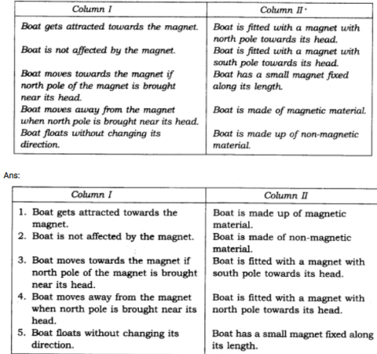

all ex and ques/ans is avlable in wedsite of ncert
1. Fill in the blanks in the following:
(i) Artificial magnets are made in different shapes such as_________ ,_______
(ii) The materials which are attracted towards a magnet are called_________
(iii) Paper is not a________
(iv) In olden days, sailors used to find direction by suspending a piece of
(v) A magnet always has ________poles.
Ans:
(i) bar magnet, horse-shoe magnet and cylindrical magnet
(ii) magnetic materials
(iii) magnetic
(iv) bar magnet or lode stone
(v) two or a pair of
2. State whether the following statements are true or false:
(i) A cylindrical magnet has only one pole.
(ii) Natural magnets were discovered in Greece.
(iii) Similar poles of a magnet repel each other.
(iv) Maximum iron filings stick in the middle of a bar magnet when it is brought near them.
(v) Bar magnets always point towards North-South direction when suspended freely in air.
(vi) A compass can be used to find East-West direction at any place.
(vii) Rubber is a magnetic material.
Ans:
(i) False
(ii) True
(iii) True
(iv) False
(v) True
(vi) True
(vii) False
3. It was observed that a pencil sharpener gets attracted by both the poles of a magnet although its body is made of plastic. Name a material that might have been used to make some part of it.
Ans: Iron is used to make some part of sharpener due to which it is attracted toward magnet.
4. Column I shows different positions in which one pole of a magnet is placed near that of the other. Column II indicates the resulting action between them for each situation. Fill in the blanks.
Ans:

5. Write any two properties of a magnet.
Ans: Two properties of magnets are:
(i) A magnet has two poles: North pole and South pole.
(ii) Like poles repel each other and unlike poles attract each other.
6. Where are poles of a bar magnet located?
Ans: Poles are located at the ends of bar magnet just before the ends. These are north and south poles.
7. A bar magnet has no markings to indicate its poles. How would you find out near which end is its north pole located?
Ans: Take the bar magnet and suspend it freely with the help of a thread, the end that points towards north pole will be regarded as north end of the magnet. Take a bar magnet with known/marked poles on it. Let the north pole of the magnet be brought closer to the suspended magnet at the end that is pointing towards north, if it shows repulsion than it is confirmed.
8. You are given iron strip. How will you make it into a magnet?
Ans: Making a magnet: Take an iron strip and place it on the table. Now take a bar magnet and place one of its poles near one edge of the strip of iron. Without lifting it move it along the length of the iron strip till you reach the other end. Now lift the magnet and bring the pole to the same point of strip from where yob began. Repeat this process about 30-40 times. Bring some iron fillings near the strip and observe that the strip attracts the fillings. This indicates that the iron strip becomes magnet.

Q9 How is compass used to find direction?
Ans: A compass is a small case of glass. A magnetised needle is pivoted inside the box. The needle can rotate freely. Compass also has a dial with directions marked on it. The compass is kept at the place where we want to know the directions. When the needle comes to rest it indicates north-south direction. The compass is then rotated until the north and south marked on the dial are at the two ends of the needle. Usually different colours are used to point the ends of needle to identify the north and the south poles.

10. A magnet was brought from different directions towards a toy boat that has been floating in water in a tub. Effect observed in each case is stated in Column I. Possible reason for the observed effects are mentioned in Column II. Match the statements given in Column I with those in Column II.
